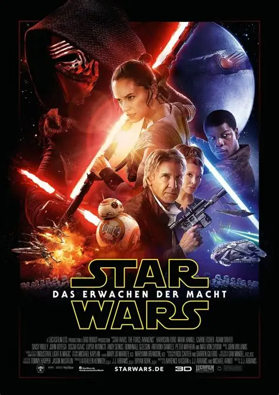

Star Wars: The Force Awakens, J. J. Abrams

«Звёздные войны: Пробуждение силы» — американский научно-фантастический фильм режиссёра Джей Джея Абрамса, вышедший в прокат в декабре 2015 года. Это седьмой эпизод саги «Звёздные войны».
Действие происходит примерно через 30 лет после событий фильма «Возвращение джедая». Девушка-мусорщица Рей и бывший штурмовик Финн оказываются втянуты в борьбу Сопротивления с Первым орденом и его тёмным воином Кайло Реном.
Интересные факты
Это первый фильм «Звёздных войн», выпущенный после покупки студии Lucasfilm компанией Disney в 2012 году.
В фильме вернулись актёры оригинальной трилогии: Харрисон Форд, Марк Хэмилл и Кэрри Фишер.
Фильм собрал в прокате США около 936 млн долларов — это самый большой результат в истории американского проката.